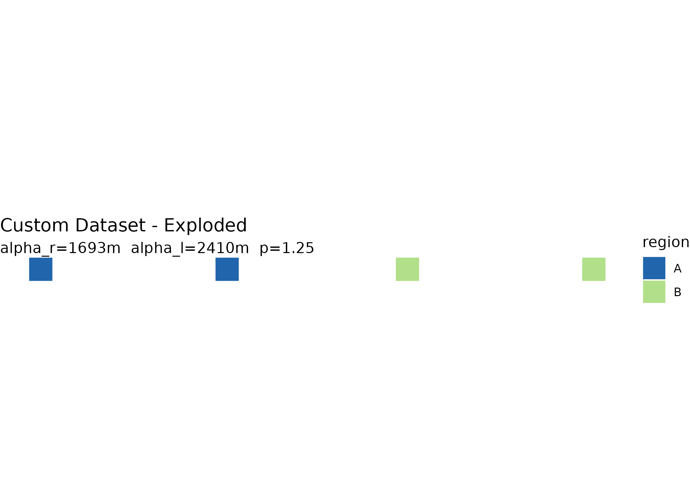
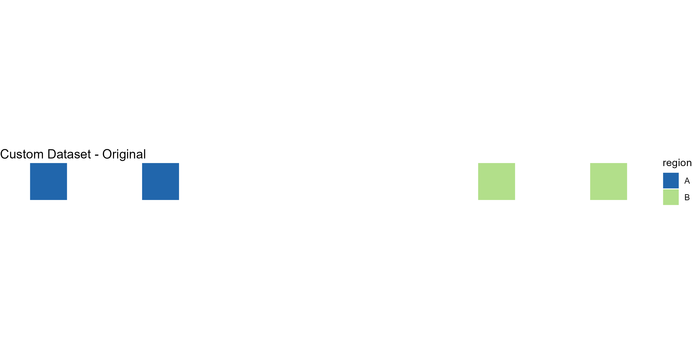
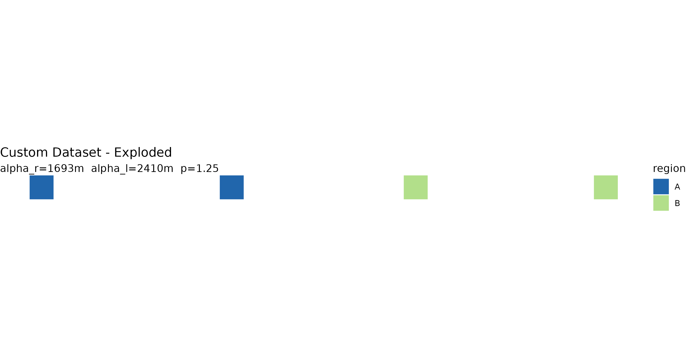

Overview
explodemap generates hierarchical exploded-view maps for
dense administrative boundary data. It applies rigid-body translations
to polygon geometries so that features are visually separated while each
feature’s internal geometry is preserved exactly.
The basic two-level workflow is:
- Group units into regions using a column in your data.
- Displace units within and across those regions using a centroid-driven vector field with analytically derived parameters.
For the two-level core described in the paper, the package is designed to satisfy three key properties:
- Proposition 1: each polygon’s shape, area, perimeter, and topology are preserved exactly.
- Proposition 2: the radial ordering of units within each region is preserved.
-
Proposition 3: no unit is displaced by more than
alpha_r + alpha_lmetres.
Input requirements
explodemap expects an sf object with:
- Polygon or multipolygon geometries
- A grouping column identifying the parent region for each unit
- A projected CRS with linear metre units
Geographic coordinates such as EPSG:4326 (longitude/latitude) must be transformed before use. For U.S. work, a state plane, UTM, or Albers-type projected CRS is usually appropriate.
library(sf)
#> Linking to GEOS 3.12.1, GDAL 3.8.4, PROJ 9.4.0; sf_use_s2() is TRUE
library(explodemap)A minimal example
We create a small synthetic dataset with four square polygons in two regions.
sq <- function(xmin, ymin, size = 1000) {
st_polygon(list(matrix(
c(xmin, ymin,
xmin + size, ymin,
xmin + size, ymin + size,
xmin, ymin + size,
xmin, ymin),
ncol = 2,
byrow = TRUE
)))
}
geom <- st_sfc(
sq(0, 0), sq(3000, 0), # Region A
sq(12000, 0), sq(15000, 0), # Region B
crs = 3857
)
x <- st_sf(
id = c("a1", "a2", "b1", "b2"),
region = c("A", "A", "B", "B"),
geometry = geom
)
x
#> Simple feature collection with 4 features and 2 fields
#> Geometry type: POLYGON
#> Dimension: XY
#> Bounding box: xmin: 0 ymin: 0 xmax: 16000 ymax: 1000
#> Projected CRS: WGS 84 / Pseudo-Mercator
#> id region geometry
#> 1 a1 A POLYGON ((0 0, 1000 0, 1000...
#> 2 a2 A POLYGON ((3000 0, 4000 0, 4...
#> 3 b1 B POLYGON ((12000 0, 13000 0,...
#> 4 b2 B POLYGON ((15000 0, 16000 0,...Running the explosion
The simplest entry point is explode_sf(). Pass your sf
object and the name of the grouping column:
result <- explode_sf(x, region_col = "region", plot = FALSE)In Shiny or other non-interactive pipelines, add
quiet = TRUE to suppress progress messages:
quiet_result <- explode_sf(x, region_col = "region", plot = FALSE, quiet = TRUE)
class(quiet_result)
#> [1] "exploded_map" "list"The returned object is an S3 object of class
exploded_map:
class(result)
#> [1] "exploded_map" "list"
names(result)
#> [1] "sf_orig" "sf_exp" "sf_exp_wgs" "stats"
#> [5] "params" "gamma_r_implied" "gamma_l_implied" "plots"
#> [9] "refinement" "diagnostics"It contains the original and exploded geometries, a WGS84 export-ready version, derived statistics and parameters, plots, and diagnostics.
Diagnostics
print() shows geometry statistics and derived
parameters:
print(result)
#>
#> -- Custom Dataset ----------------------------------------
#> n units : 4
#> n regions : 2
#> w_bar : 1.1 km
#> R_local : 1.5 km
#> n_bar : 2
#> R_local/w : 1.33
#> alpha_r : 1.7 km
#> alpha_l : 2.4 km
#> p : 1.25
#> max ||t|| : 4.1 km (Proposition 3 bound)summary() adds implied gamma coefficients that are
useful for calibration work:
summary(result)
#>
#> Exploded Map Summary
#> ====================
#> Dataset: Custom Dataset
#> Units: 4
#> Regions: 2
#> Grouped by: region
#>
#> Geometry Statistics
#> Characteristic diameter (w_bar): 1.1 km
#> Regional radius (R_local): 1.5 km
#> Median units/region (n_bar): 2
#> Tightness ratio (R_local/w_bar): 1.33
#>
#> Parameters
#> alpha_r: 1.7 km (regional separation)
#> alpha_l: 2.4 km (local expansion)
#> p: 1.25
#>
#> Implied Gamma Coefficients
#> gamma_r: 3
#> gamma_l: 1.136Plotting
plot(result)
You can also view both original and exploded layouts side by side:
plot(result, "both")

Calibration output
calibration_row() returns a one-row data frame suitable
for combining across datasets when building a cross-dataset calibration
table:
calibration_row(result)
#> label n_units n_regions w_bar_km R_local_km ratio alpha_r alpha_l
#> 1 Custom Dataset 4 2 1.13 1.5 1.33 1693 2410
#> gamma_r_implied gamma_l_implied
#> 1 3 1.136Manual parameter overrides
By default, explodemap derives displacement parameters
analytically from dataset geometry using the paper’s two closed-form
results. You can also supply parameters directly. Overrides may be
supplied independently, so you can tune regional separation without
changing local expansion, or vice versa:
manual <- explode_sf(
x,
region_col = "region",
alpha_r = 100,
alpha_l = 200,
plot = FALSE
)
#> Using manual alpha_r = 100 m
#> Using manual alpha_l = 200 m
manual$params
#> $alpha_r
#> [1] 100
#>
#> $alpha_l
#> [1] 200
#>
#> $p
#> [1] 1.25
#>
#> $gamma_r
#> [1] NA
#>
#> $gamma_l
#> [1] NA
#>
#> $refine
#> [1] FALSE
more_region_gap <- explode_sf(
x,
region_col = "region",
alpha_r = result$params$alpha_r * 1.5,
plot = FALSE
)
#> Using manual alpha_r = 2538.8531259649 m
more_region_gap$params
#> $alpha_r
#> [1] 2538.853
#>
#> $alpha_l
#> [1] 2409.82
#>
#> $p
#> [1] 1.25
#>
#> $gamma_r
#> [1] NA
#>
#> $gamma_l
#> [1] 1.136
#>
#> $refine
#> [1] FALSEOptional collision refinement
The two-level algorithm is the clean paper model. For dense municipal cores, you can add a bounded refinement pass that nudges close same-region neighbors apart after the analytical displacement:
refined <- explode_sf(
x,
region_col = "region",
refine = TRUE,
refine_min_gap = 0.15,
refine_max_shift = 0.10,
plot = FALSE
)
refined$refinement#> Collision refinement: corrected 0 pair-visits; max shift = 0.0 m.
#> $enabled
#> [1] TRUE
#>
#> $min_gap
#> [1] 0.15
#>
#> $max_shift
#> [1] 0.1
#>
#> $max_iter
#> [1] 20
#>
#> $step
#> [1] 0.5
#>
#> $within
#> [1] "region"
#>
#> $iterations
#> [1] 1
#>
#> $corrected_pairs
#> [1] 0
#>
#> $active_pairs_last
#> [1] 0
#>
#> $max_shift_observed
#> [1] 0refine_max_shift caps the extra correction per feature,
so the refinement remains a small display adjustment rather than a
replacement for the displacement model. Use
refine_within = "all" when the remaining crowding crosses
region boundaries.
Centroid options
For irregular or multipart polygons, "point_on_surface"
may be preferable to the default geometric centroid:
pos <- explode_sf(
x,
region_col = "region",
centroid_fun = "point_on_surface",
plot = FALSE
)Using TIGER/Line data for U.S. states
explode_state() downloads U.S. Census TIGER/Line
boundaries automatically and groups municipalities by a county-to-region
mapping:
nj <- explode_state(
state_fips = "34", crs = 32118,
region_map = list(
North = c("Bergen", "Essex", "Hudson", "Morris",
"Passaic", "Sussex", "Union", "Warren"),
Central = c("Hunterdon", "Mercer", "Middlesex",
"Monmouth", "Somerset"),
South = c("Atlantic", "Burlington", "Camden", "Cape May",
"Cumberland", "Gloucester", "Ocean", "Salem")
),
label = "New Jersey"
)Downloaded data is cached locally so subsequent runs are faster.
Use quiet = TRUE in app code if downloads and region
assignment happen inside a reactive expression.
Using a lookup table
explode_sf_with_lookup() joins an external lookup table
to your sf object before exploding:
groups <- read.csv("region_assignments.csv")
result <- explode_sf_with_lookup(
my_sf,
join_col = "GEOID",
lookup = groups,
lookup_key = "geoid",
region_col = "region"
)Unmatched units are labelled "Other". This is useful
when a lookup table is incomplete. You can include or exclude those
units using allow_other.
Export
The export parameter supports three modes:
-
NULL(default): no export -
TRUE: auto-named GeoJSON file - A file path string: explicit output location
result <- explode_sf(
my_sf,
region_col = "region",
export = "output.geojson"
)Interactive focus maps and Shiny
focus_map() renders raw sf,
exploded_map, or grouped_exploded_map objects
as an interactive htmlwidget. Click a polygon to zoom and lift it into
focus; right-click or press Escape to reset. Information cards can show
selected fields without blocking the map.
focus_map(
result,
label_col = "id",
id_col = "id",
group_col = "region",
group_palette = c(A = "#4C78A8", B = "#F58518", C = "#54A24B"),
info_cols = c("id", "region"),
info_card_scale = 0.95
)In Shiny, use focusmapOutput() and
renderFocusmap(). The widget emits
input$<outputId>_selected, which includes the
selected feature ID, label, group, and properties.
ui <- shiny::fluidPage(
focusmapOutput("map", height = "650px"),
shiny::verbatimTextOutput("selected")
)
server <- function(input, output, session) {
exploded <- explode_sf(x, "region", plot = FALSE, quiet = TRUE)
output$map <- renderFocusmap({
focus_map(
exploded,
label_col = "id",
id_col = "id",
group_col = "region",
group_palette = c(A = "#4C78A8", B = "#F58518", C = "#54A24B")
)
})
output$selected <- shiny::renderPrint(input$map_selected)
}For section drill-downs, use explode_section() before
rendering. It explodes the selected section and marks the rest of the
layer as context:
focused <- explode_section(
x,
section_col = "region",
section = "A",
region_col = "county",
alpha_r = 900,
alpha_l = 600,
plot = FALSE,
quiet = TRUE
)
focus_map(
focused,
label_col = "id",
context_col = ".explodemap_role",
context_mode = "fade"
)Small municipal features can use adaptive focus sizing so the selected polygon is not left visually distant after the camera moves:
focus_map(
focused,
label_col = "id",
context_col = ".explodemap_role",
context_mode = "fade",
min_focus_width = 115,
min_focus_height = 88,
tiny_feature_threshold = 52,
tiny_feature_boost = 1.45,
origin_context = "inset",
origin_context_position = "bottom-left",
focus_context_opacity = 0.14,
show_drag_zoom = TRUE
)Notes
- Always use a projected CRS before running the algorithm.
- The two-level core preserves each feature’s internal geometry exactly through rigid-body translation.
- Parameter derivation is deterministic and reproducible: the same dataset and gamma coefficients always produce the same output.
Next steps
See vignette("grouped-layouts") for the three-level
extension using explode_grouped(), which adds region-block
anchor placement for larger multi-region or national layouts.